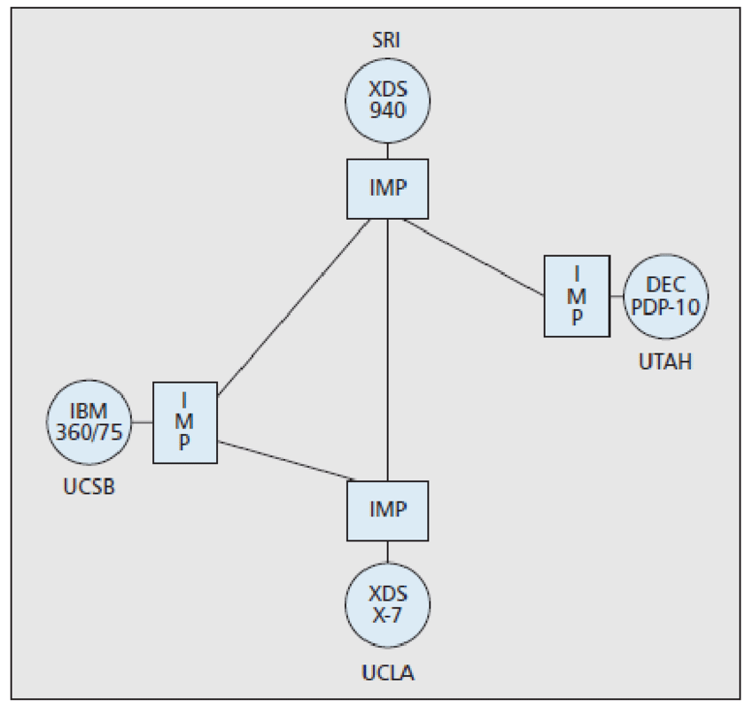

1983: nace el TCP/IP, un lenguaje común
[+] ¿Qué es el modelo TCP/IP?
interconectar redes de computadoras y otros dispositivos como
teléfonos y consolas. Cuando varios protocolos trabajan juntos,
se les llama suite o pila de protocolos, y TCP/IP es un ejemplo
perfecto de esto. Este conjunto de protocolos permite que dispositivos
en todo el mundo se comuniquen, haciendo posible lo que
hoy conocemos como Internet.
El término "TCP" proviene de uno de los protocolos más importantes
que lo componen: el "Transmission Control Protocol"
(TCP), que se encuentra en la capa de transporte, y "IP" se refiere a la
"Internet Protocol" (IP), que opera en la capa de red.
[+] Un poco de historia
En 1972, Vinton G. Cerf era un científico de DARPA (Defense Advanced Research Projects Agency)
en la Universidad de Stanford en dónde empezó a trabajar en diversos proyectos de investigación. En la primavera de 1973, Cerf se une al científico Robert Kahn para trabajar en un proyecto para diseñar el protocolo de red de siguiente generación para la ARPANET. Kahn tenía experiencia con unas computadoras que conmutaban paquetes conocidos como IMP (Interface Message Processors), y Cerf tenía experiencia con el protocolo NCP (Network Control Protocol). Con la experiencia de ambos se conjuntó el equipo perfecto para crear el protocolo TCP (Transmission Control Protocol).
En septiembre de 1973, Cerf y Kahn empezaron con un borrador en papel describiendo su diseño de la red titulado "A protocol for packet network interconnection", traducido al español como "Un protocolo para la interconexión en una red de paquetes". Ya finalizado el documento, se publicó en la revista IEEE Transactions on Communications Technology en mayo de 1974. El protocolo permitió la creación de una red internacional de redes de computadoras, mejor conocido como Internet, término que se deriva de los vocablos en inglés "Internetworking of networks".
En 1978 TCP fue dividido en TCP e IP. En 1981 fue introducido el protocolo IP versión 4 y especificado en detalle por el IETF en el RFC 791. En 1982 la DCA (Defense Communications Agency) y ARPA establecen a TCP e IP, como la suite de protocolos TCP/IP para la red ARPANET.
En enero de 1983 ARPANET requería que todas las computadoras conectadas utilizaran TCP/IP. Esto trajo como consecuencia que TCP/IP se convirtiera en el corazón de la red ARPANET y reemplazara por completo al protocolo NCP.
Ya finalizada la migración a TCP/IP, los altos mandos del Departamento de Defensa de EUA deciden dividir ARPANET en dos redes, una llamada MILNET, enfocada a la milicia, y la otra continuaría con el mismo nombre de ARPANET.
ARPANET→ Red de dispositivos que gracias al TCP IP pudo llegar a se Internet
IEEE → Institute of Electrical and Electronics Engineers
BOB KAHN
Robert E. Kahn
En DARPA, Kahn dirigió los proyectos que llevaron a la creación de ARPANET y luego trabajó con Cerf en el diseño del protocolo TCP/IP.
Vint Cerf
VINT CERF
Trabajó en el diseño y desarrollo de ARPANET, la primera red de computadoras financiada por el gobierno de los EE. UU., que eventualmente evolucionaría en Internet.
Vint Cerf y Bob kahn
Amigos
Vinton Cerf y Robert E. Kahn son cons iderados los "padres de Internet" por haber desarrollado en los años 70 el protocolo TCP/IP, que permitió la comunicación entre diferentes redes y dio origen al Internet moderno.
[+] TCP/IP y el modelo OSI
Mientras que el modelo OSI describe comunicaciones de red ideales y se centra
en una variedad de protocolos, TCP/IP
se desarrolló como un modelo de arquitectura de red que funciona en la práctica.
TCP/IP es particularmente adecuado para redes grandes y medianas,
ofreciendo fiabilidad y eficiencia en el enrutamiento de paquetes.
A diferencia del modelo OSI, que es conceptual, TCP/IP se basa en un enfoque
cliente-servidor y presenta un conjunto diferente de capas.
----{Conclusión}----
MAS HITOS DE LA HISTORIA DE INTERNET
1971 - Virus Creeper
Creeper fue el primer virus informático, creado por Bob Thomas. Se propagaba a través de ARPANET, mostrando el mensaje "I'M THE CREEPER: CATCH ME IF YOU CAN!" en las computadoras afectadas. Este evento llevó al desarrollo de antivirus y medidas de seguridad más robustas en redes.

Napster, el MP3 y la Era de la Piratería (1999)
Napster, lanzado en 1999, fue el primer servicio que permitió el intercambio gratuito de música en formato MP3. Revolucionó la distribución musical, desafiando la industria tradicional y generando un auge en la piratería digital, lo que llevó a nuevos modelos de negocio en la música
Proyecto Gutenberg y eBooks - 1971
El Proyecto Gutenberg fue fundado por Michael Hart, con el objetivo de digitalizar libros y hacerlos accesibles en línea. El primer eBook fue una versión digital de la Declaración de Independencia de los EE. UU. la primera iniciativa para digitalizar libros, marcando el inicio de los libros electrónicos.

Cyclades - 1972
Cyclades fue una red de investigación francesa que implementó la conmutación de paquetes y se enfocó en la descentralización de la red. Inspiró el diseño del protocolo TCP/IP.
Creación de ARPANET - 1969
ARPANET fue creada por ARPA para facilitar la comunicación entre computadoras de investigación. Marcó el inicio de las redes distribuidas y la base del Internet.
Primera Conexión Transatlántica & Popularidad del E-Mail - 1973
ARPANET realizó su primera conexión transatlántica a Londres. Al mismo tiempo, el correo electrónico comenzó a ganar popularidad, constituyendo la mayor parte del tráfico de ARPANET.
El Módem de Computadora - 1977
Se lanzó el módem que permitía a las computadoras conectarse a través de líneas telefónicas, lo que permitió que los usuarios accedieran a redes y datos desde sus hogares. Democratizó el acceso a la red, marcando el inicio de la era de la conexión a Internet en los hogares.
Creación de Usenet - 1979
Usenet, creado por Tom Truscott y Jim Ellis, fue un sistema que permitía a los usuarios compartir mensajes y archivos a través de foros de discusión en línea. Pionero en la creación de comunidades en línea y precursor de los foros, grupos de discusión y redes sociales actuales.
Creación del Protocolo DNS - 1983
El Sistema de Nombres de Dominio (DNS) fue implementado para convertir las direcciones IP numéricas en nombres de dominio más amigables y fáciles de recordar, como "example.com". DNS permitió la expansión y accesibilidad del Internet, facilitando la navegación y organización de sitios web.
Lanzamiento de la Red Mundial (World Wide Web) - 1991
Tim Berners-Lee creó la World Wide Web (WWW) junto con el primer navegador y servidor web. La web permitió el acceso a páginas interconectadas a través de hipervínculos. La WWW cambió la forma en que las personas acceden, crean y comparten información, popularizando el uso del Internet en todo el mundo.
Primer Navegador Web Gráfico - 1993
El navegador Mosaic fue el primer navegador web gráfico desarrollado por Marc Andreessen, lo que permitió a los usuarios visualizar imágenes junto con texto en la web. Popularizó el uso del Internet para el público en general, ya que hizo la navegación web mucho más intuitiva y visualmente atractiva.